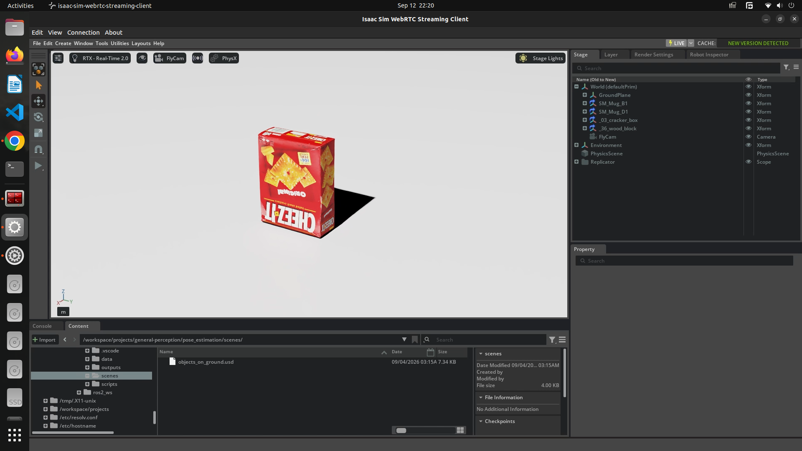

6-DoF Pose Estimation from Multi-View Point Clouds
A complete object pose estimation pipeline built from scratch on synthetic RGB-D data from NVIDIA Isaac Sim. It reconstructs a merged 3D point cloud from several views, isolates the object, and estimates its position and orientation, using classical geometry only and no learned models.
1. Overview
The pipeline takes multi-view RGB-D captures of a scene, merges them into one 3D point cloud using two independent registration methods, separates the object of interest from the scene, and estimates its 6-DoF pose (position and orientation) with PCA on the resulting geometry.
It was built as a hands-on learning project: to become fluent with Open3D, with Isaac Sim's Replicator, and with the whole stack of 3D perception, from raw depth backprojection to the final pose. Every stage uses classical geometric methods implemented directly, with no deep-learning frameworks, no ROS and no CUDA.
2. Pipeline
The work is a sequence of numbered scripts, each one stage of the process.
3. Stage-by-stage results
Each stage below is shown with a short screen recording of the actual run.
The scene and the captures
The scene is a set of objects on a ground plane, lit and rendered in Isaac Sim. The Replicator BasicWriter records RGB, depth and camera parameters from each of the 6 viewpoints.



Single-frame point cloud (Step 1)
The depth map of one frame is backprojected through the camera intrinsics into the camera's own coordinate frame. Every pixel with a valid depth becomes a 3D point, coloured from the matching RGB pixel.
Merged multi-view point cloud (Step 2)
All 6 per-view clouds are registered into one world-space cloud. Method 2a uses Isaac's ground-truth camera poses directly. Method 2b reaches the same result with no pose priors, using FPFH feature matching, RANSAC global alignment, point-to-plane ICP and pose graph optimisation.
Isolated object cloud (Step 3)
The ground plane is removed with RANSAC plane fitting. Statistical and radius outlier removal clean up registration artefacts, and DBSCAN clustering keeps the largest remaining cluster, which is the object, while discarding stray noise points.
Final pose estimation (Steps 4 and 5)
The estimated pose is drawn as a coordinate frame (red, green and blue axes for X, Y and Z) aligned to the object's principal axes, next to the world-origin frame. The translation is the point cloud centroid, and the rotation comes from the eigenvectors of the point covariance matrix.


pose.json: rotation matrix, translation and 4x4 transform.4. Technical details
Camera convention
Isaac Sim uses a USD / Omniverse coordinate system that needs careful handling:
- The world frame is right-handed and Y-up.
- The camera-local frame is OpenGL-style: X to the right, Y up, and the camera looks down −Z.
cameraViewTransformin the JSON is a row-major, row-vector view matrix, meaningp_world_row @ M = p_camera_row. To use it as a standard column-vector transform it must be transposed and inverted.distance_to_image_planeis z-depth (distance along the optical axis), not Euclidean ray length.
These conventions are documented in utils_isaac_io.py and checked automatically by 00_verify_conventions.py.
Intrinsics: projection matrix, not aperture and focal length
Intrinsics are derived from Isaac's cameraProjection matrix instead of the physical cameraAperture and cameraFocalLength values. Isaac's "aperture fit" conform policy can silently rescale the effective field of view on one axis without updating the reported aperture. On the real capture data this produced a ~23% systematic error in fy when derived from the aperture. Using the projection matrix that the renderer itself uses removes the ambiguity.
Registration: two methods
Method 2a: known extrinsics. Uses Isaac's ground-truth cameraViewTransform to place each view in world space. No feature matching is needed: transform and concatenate. It serves as the reference for judging Method 2b.
Method 2b: ICP. Registers views from geometry alone. Each cloud is voxel-downsampled, given normals and FPFH features, then registered pairwise with coarse RANSAC alignment followed by point-to-plane ICP. A pose graph with odometry edges (consecutive pairs) and loop-closure edges (all other pairs) is then optimised globally with Levenberg-Marquardt.
Pose estimation with PCA
- Translation: the centroid of the isolated object cloud.
- Rotation: the eigenvectors of the point covariance matrix, sorted by descending eigenvalue, so the largest spread becomes the primary axis. If the eigenvectors form a left-handed system, the matrix is corrected to be right-handed (determinant +1).
The method is geometry-only and makes no assumption about object category or shape: it estimates the principal axes of what was observed.
5. Key design decisions
- Intrinsics from the projection matrix. Avoids the systematic aperture-fit error described above, confirmed empirically on the captured data.
- Two registration methods side by side. A ground-truth method (2a) and an algorithmic one (2b) make it easy to compare registration quality and see where ICP introduces error relative to the known-pose baseline.
- Step 0 as a runnable sanity check. Sign of Y, sign of Z and row-major versus column-major matrices are the most common sources of silent errors in 3D perception. Turning the check into a script makes it repeatable instead of a comment.
6. Running the pipeline
Requirements: Python 3.8+, open3d and numpy. Isaac Sim is not needed, because the capture data is in the repository.
# clone only the pose_estimation folder git clone --filter=blob:none --sparse https://github.com/Vihaan30g/general-perception.git cd general-perception git sparse-checkout set pose_estimation pip install open3d numpy # every script is run from the scripts folder cd pose_estimation/scripts
Run the steps in order:
python 00_verify_conventions.py # Step 0 (optional): sanity check python 01_pcd_from_depth.py # Step 1: per-view point clouds python 02a_registration_known_extrinsics.py # Step 2a: merge with ground-truth poses python 02b_registration_icp.py # Step 2b: merge with FPFH + RANSAC + ICP python 03_plane_and_object_segmentation.py # Step 3: isolate the object python 04_pose_estimation_pca.py # Step 4: write pose.json python 05_visualize.py # Step 5: interactive view
| Step | What it does | Output |
|---|---|---|
| 0 | Cross-checks the depth math against Isaac's point cloud. A mean nearest-neighbour distance below 2 cm means the conventions are correct. | Printed check |
| 1 | Backprojects each depth map into a camera-local cloud. | outputs/per_view_pcd/ |
| 2a | Merges with known camera poses. Runs after Step 1. | merged_scene_extrinsics.pcd |
| 2b | Merges from geometry alone. Slower: runtime grows quadratically with the number of views. | merged_scene_icp.pcd |
| 3 | RANSAC ground removal, outlier removal and DBSCAN. Works on the result of 2a or 2b. | object.pcd |
| 4 | PCA pose: 3×3 rotation, translation and 4×4 transform. | pose.json |
| 5 | Open3D window with the object, its pose frame and the world origin. | Interactive |
Step 3 accepts --input to choose which merged cloud to use (ICP by default), plus two tunable parameters:
| Parameter | Default | Description |
|---|---|---|
--plane-dist-thresh | 0.008 m | RANSAC inlier threshold for the ground plane. Increase it if the plane is not fully removed. |
--voxel | 0.003 m | Final voxel downsample resolution of the object cloud. |
7. Utility scripts and re-capturing data
view_pointcloud.py: inspect any cloud at any stage
python view_pointcloud.py ../outputs/per_view_pcd/frame1.pcd python view_pointcloud.py ../outputs/merged_scene_icp.pcd --voxel 0.005 python view_pointcloud.py ../outputs/object.pcd --uniform-color 0.8 0.2 0.2 --axis 0.1
| Flag | Description |
|---|---|
--axis <size> | Draw a world-origin frame of the given size (0 hides it). |
--voxel <size> | Downsample before viewing, useful for large merged clouds. |
--uniform-color R G B | Paint the cloud one flat colour (0 to 1 range). |
fly_cam.py: a free-fly camera in Isaac Sim
Paste it into Isaac Sim's Script Editor and run once. It creates a standard USD camera at /World/FlyCam that you move with right mouse button and WASD, handy for framing the scene before capture. It only runs inside Isaac Sim.
Capturing your own data (optional)
- Open
scenes/objects_on_ground.usdin Isaac Sim. - Use
fly_cam.pyto navigate and frame the scene. - Configure the Replicator
BasicWriterto outputrgb,distance_to_image_plane,camera_paramsandpointcloud. - Run the Replicator. Frames are written to
data/captures/. - Continue from Step 0.
8. Repository structure
pose_estimation/
data/captures/frame1 ... frame6/ RGB, depth, camera params, ground-truth point cloud
scenes/
objects_on_ground.usd Isaac Sim scene used for capture
scripts/
utils_isaac_io.py shared IO and camera math (read this first)
00_verify_conventions.py Step 0
01_pcd_from_depth.py Step 1
02a_registration_known_extrinsics.py Step 2a
02b_registration_icp.py Step 2b
03_plane_and_object_segmentation.py Step 3
04_pose_estimation_pca.py Step 4
05_visualize.py Step 5
fly_cam.py Isaac Sim free-fly camera
view_pointcloud.py inspect any .pcd file
The outputs/ folder is not committed (it would hold large .pcd files). It is created when you run the scripts. This project is one of several in the general-perception repository, alongside the Grounding DINO and SAM ROS 2 packages and the shared Isaac Sim scenes.